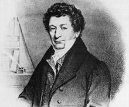

Généralités
Notre pays est même l’un des principaux producteurs légaux au monde de morphine.
Depuis plusieurs millénaires, l'Opium est connu des hommes.
Fils du pavot, père de la morphine, l'opium représente pendant plus de quatre mille ans la source des plus extraordinaires préparations pharmaceutiques.
A travers le monde il a été appliqué à diverses utilisations : en effet bien qu'il fut l'un des plus anciens médicaments, il est aussi l'une des plus anciennes drogues.
Nous allons maintenant voir la place de l’opium dans l'Histoire.


II- Moyen-âge
Il est probable que le pavot fut connu des Chinois, à la suite des relations nombreuses et fréquentes qu'ils avaient avec l'Inde. Cependant la consommation abusive des Chinois entraîne de nombreux empereurs ( par exemple l'empereur Yung Chen ) à interdire sa vente et son exploitation (sans succès). On assiste alors à une élaboration d'un mode de consommation très sophistiqué avec la fameuse pipe à Opium. La Chine est alors le premier pays à avoir fait des mélanges tabac-opium.
La Chine ne cultivant que très peu le pavot à Opium, un trafic s'établit entre les Chinois et les Britanniques avec la vente d'opium venant d'Inde. L'interdiction de l'Opium en Chine n'arrête pas ce commerce et les différends commerciaux entre l'empereur de Chine et les Britanniques vont conduire à la première guerre de l'Opium ( 1840-1841) qui se soldera par un échec chinois. Une deuxième guerre de l'opium se déclenche en 1856. Cette deuxième guerre aura des conséquences encore plus désastreuses pour la Chine car 10 000 tonnes d'Opium seront importées en Chine. Dans un même temps le nombre d'opiomanes en Chine dépasserait un cinquième de la population.
En Europe la consommation d'opium s'est diffusée dans toutes les classes sociales, par exemple en Angleterre chez les ouvriers et en France dans la bourgeoisie parisienne avec l'opium raffiné, dans ses bouilleries de Saigon. La consommation d'opium en France est de nos jours très contrôlée, et n'est possible qu'à des fins médicales. L'opium a permis de nombreuses avancées dans le domaine de la médecine avec principalement la découverte de la morphine. On trouve ainsi de nombreux remèdes brevetés utilisant l'opium (par exemple le Codenfan qui utilise de la codéine pour traiter la douleur). On estime à 5000 tonnes la production illicite de l'opium, dont les deux tiers seraient consommés sous forme d'héroïne. Cette production est principalement assurée par deux grandes régions : le Croissant d'or (Iran, Afghanistan, Pakistan ) et le triangle d'or (Laos, Birmanie, Thaïlande ). L'Afghanistan et le Myanmar ( Birmanie ) sont les deux plus gros producteurs illicites d'opium. Leur instabilité politique favorise cette production clandestine et ce trafic.
mais c’est à un pharmacien de la ville allemande de Hanovre F. W. Sertürner que revient le mérite d’avoir découvert que la substance cristallisée isolée était un alcaloïde.
C’est le premier alcaloïde connu, Sertürner le nomme aussitôt « morphium » car ses effets narcotiques rappellent le dieu des rêves de la Grèce antique (Morphée).
la morphine grâce à ses puissants effets est classée parmi les médicaments. A partir de cette période une utilisation massive de la morphine pour son effet antalgique (antidouleur) devient possible que ce soit dans les hôpitaux ou sur les champs de bataille.
Cette utilisation massive et non reglementée et la vente libre de la morphine vont créer de nombreux cas de toxicomanie au XIXème siècle.
C'est à partir de ce moment là que la morphine va avoir une image péjorative.

Friedrich Sertüner(1783/1841)
Dates importantes :
-1925: la structure moléculaire de la morphine est établie par le chimiste britannique Robert Robinson.
-1950: on redécouvre les bienfaits de la morphine grâce au cocktail de Brompton, cocktail qui sera réservé pour apaiser les souffrances à la fin de la vie.
-1973: des chercheurs américains et suédois mettent en évidence l’existence de récepteurs spécifiques aux opioïdes (médicaments antalgiques) au niveau du système nerveux central.
-1975/1980: on continue à faire des progrès dans l’adaptation des doses aux besoins des patients et on découvre différents modes d’administration.
IV-Législation de la Morphine
Son usage est réglementé dans de nombreux pays. En France, la morphine et ses sels sont des stupéfiants, elle est donc soumise à cette réglementation.
Dans l’Article R5132-30 du code de la santé publique, il est inscrit qu’il est formellement prohibé de prescrire des médicaments classés comme stupéfiants ou soumis à la réglementation des stupéfiants pour un traitement d'une durée supérieure à vingt-huit jours.
L’utilisation de la morphine est donc très supervisée, en effet les pharmaciens doivent noter la délivrance sur un cahier spécial.
La détention de la morphine sans maladie est considérée comme drogue. Son unique usage légal est médical.
La morphine possédant également des effets dopants il est interdit aux sportifs participants à des compétitions d’en utiliser dans certains pays.
La morphine est souvent associée à une drogue.
Il est vrai que la morphine peut entraîner des cas d'addiction et de toxicomanie,
Mais la morphine étant très puissante, elle est réglementée par de très nombreuses lois et règles et son utilisation est rigoureusement surveillée.
De ce fait la morphine administrée dans de bonnes conditions aura une chance absolument infime d'entraîner un cas de toxicomanie chez un patient..
La morphine est souvent associée à un euthanasiant ayant pour but de précipiter la fin de vie.
Mais la morphine est utilisée chez des patients mourants dans le but de soulager leurs derniers instants et non de précipiter leur mort.
La mort du patient est souvent associé à la dernière dose de morphine que le patient s'est vu injecter
quand il s’agit simplement de la dernière administration avant que la mort ne survienne de manière naturelle.
La peur des effets indésirables de la morphine est souvent mise en avant.
Cette peur est justifiée car les effets indésirables de ce produit sont bien réels et dangereux.
Ces effets indésirables sont parfois décrits comme étant, à long terme,
pires à supporter que la douleur que la morphine permet de soulager elle-même.
Mais les effets les plus redoutés telles que les hallucinations et autres troubles psychiques
sont très rares et peuvent être facilement contrôlés en diminuant simplement le dosage.
Lorsque elle est prescrite progressivement et en fonction des besoins de la personne malade,
la morphine ne fait ni dormir, ni délirer.
Dans de bonnes conditions de prescription, une somnolence peut rarement survenir, mais elle reste transitoire et bien supportée.
Tout comme en début de traitement, la personne peut parfois récupérer un retard de sommeil en lien avec la douleur.